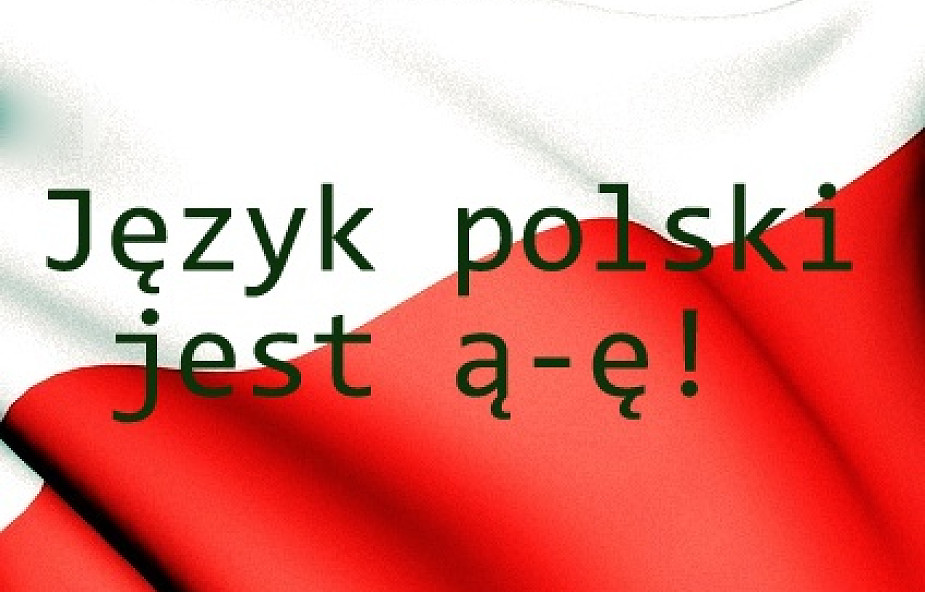

Witaj w notatkach z j. polskiego dla VIII klasy
Znajdujesz się w: Home / Klasa VIII / Spis j. Polski
Rozdział I: MÓJ DOM, MOI NAJBLIŻSI
Temat1: Jak napisać życzenia, lub pozdrowienia Temat2: Co wiemy o głoskach, literach i sylabach? Temat3: Jak korzystać ze słownika? Temat4: Co wiemy o zdaniach pytających, rozkazujących i oznajmujących? Temat5: Od akapitu do tekstu - Jak napisać list? Temat6: Pisownia wyrazów z 'u' i 'ó'Rozdział II: SZKOLENIE RADOŚCI, SZKOLNE SMUTKI
Temat1: Jaką funkcję pełni przymiotnik i przez co się odmienia? Temat2: Pisownia wielką literą - imiona, nazwiska, tytuły Temat3: Interpunkcja - cudzysłów i kursywa Temat4: Jak sporządzać notatkę? Temat5: Lektura - Akademia Pana Kleksa Temat6: Jak opisać postać?Rozdział III: O SOBIE, O NAS
Temat1: Jaką funkcję pełni czasownik i przez co się odmienia? Temat2: Jak się odmienia czasownik w czasie przeszłym i przyszłym? Temat3: Lektura - 'Mikołajek' Temat4: Pisownia wyrazów z 'ż' i 'rz' Temat5: Jak opisać przedmiot? Temat6: Jan Brzechwa - 'Samochwała'Rozdział IV: OPISAĆ POLSKĘ
Temat1: Józef Wybicki - 'Mazurek Dąbrowskiego' Temat2: Lektura - 'Pan Tadeusz' Temat3: Jaką funkcję pełni przysłówek? Temat4: Pisownia 'nie' z różnymi częściami mowy Temat5: Jak napisać plan wydarzeń? Temat6: Wanda Chotomska - 'Legenda o warszawskim Bazyliszku Rozdział V: BAŚNIOWE KRAINY
Temat1: Jak napisać zaproszenie? Temat2: Jaką funkcję pełni przyimek? Temat3: Jaką funkcję pełni spójnik? Temat4: Przecinki i spójniki Temat5: Jak napisać opowiadanie? Temat6: Pisownia wyrazów z 'ch' i 'h'Rozdział VI: CO JEST W ŻYCIU WAŻNE?
Temat1: Jak przygotować podziękowanie? Temat2: Jak zapisać rozmowę? Temat3: Pisownia wielką literą - państwa, regiony, miasta, dzielnice, wsie Temat4: Jak rozpoznać orzeczenie i podmiot? Temat5: Czym różni się zdanie od równoważnika zdań Temat6: Przecinek w zdaniuRozdział VII: UROK I SIŁA MARZEŃ
Temat1: Roald Dahl - 'Charlie i frabryka czekolady' Temat2: Jak napisać ogłoszenie? Temat3: Kajko i Kokosz. Szkoła latania Temat4: Jak odróżnić zdanie pojedyńcze od złożonego? Temat5: czym się różni zdanie pojedyńcze rozwinięte od nierozwiniętego? Temat6: Przecinek w zdaniu złożonym